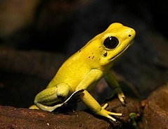
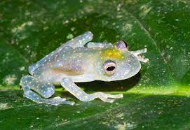
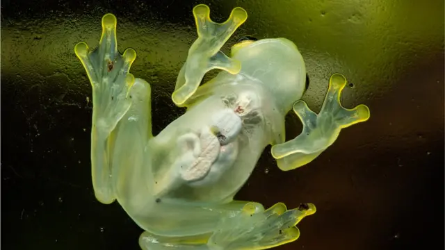
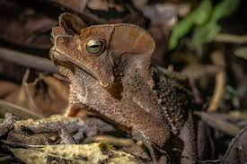

| Rana Cristal | |||
|---|---|---|---|
| Instrucciones: ingrese los datos que se piden, lea con atención cada pregunta y seleccione la opción que corresponda y envie tus preguntas | |||
| Nombre completo: | |||
| 1. ¿En Donde Comunmente Habitan Las Ranas Cristal? | |||
| 2. ¿Cuál es el nombre cientifico de la rana cristal? | a. Hyalinobatrachium valerioi | ||
| b. Hyalinobatrachium colymba | c. Hyalinobatrachium aureoguttatum | d. Hyalinobatrachium fleischmanni | |
| 3. ¿Cuál es una caracteristica distintiva de la rana cristal? | |||
| a. Piel extremadamente gruesa | b. Coloración cambiante según el ambiente | c. Piel transparente que permite ver sus órganos internos | d. Grandes ojos luminosos | 3. ¿Cuál es la función de la piel transparente de la rana cristal? | 4. ¿Cual De Las Sigientes Imagenes Representa A La Rana Cristal? |
| a.  | b.  | c.  | d.  |
| Comentarios: | |||